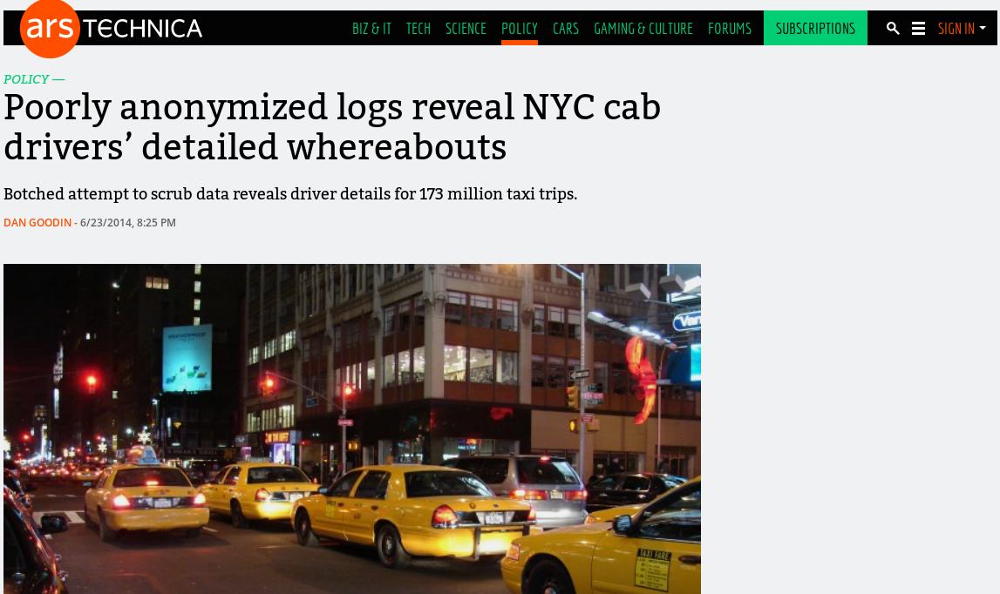

Paul-Antoine
Les données à caractère personnelles ne sont pas “communicables”.
Informations relatives :
## Observations: 100
## Variables: 4
## $ X2 <chr> "RABATEL", "MOUGENOT", "AULIN GUILLOT", "TOCHON", "PIQUERAS...
## $ X3 <chr> "FABIEN", "VINCENT", "AGNES", "FRANCOISE", "ERIC", "CHRISTI...
## $ X6 <chr> "50 AVENUE LEON MARIE FOURNET", "50 AVENUE LEON MARIE FOURN...
## $ X9 <chr> "JASSANS RIOTTIER", "JASSANS RIOTTIER", "JASSANS RIOTTIER",...
Pseudonymisation : traitement de données à caractère personnel de manière à ce qu’on ne puisse pas attribuer les données à une personne physique sans avoir recours à des informations supplémentaires.
Source : Rapport Cadiet
Anonymisation : traitement de données à caractère personnel afin d’empêcher totalement l’identification d’une personne physique
Source : Rapport Cadiet
Un jeu de données est k-anonymisé, si et seulement si à chaque combinaison de catégories quasi-identifiantes qui composent la base correspond un minimum de k individus.
Par exemple :
anonymizer (work in progress)une librairie Python qui permet de
get_k())local_aggregation())